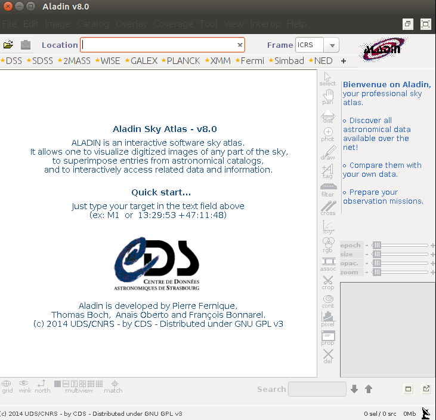
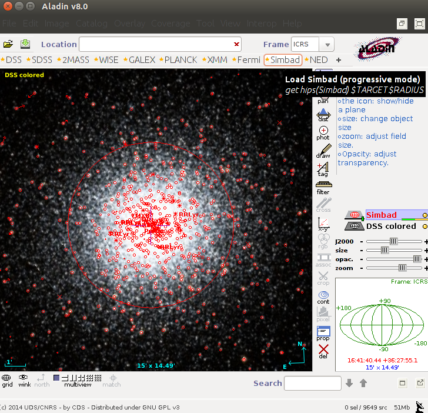
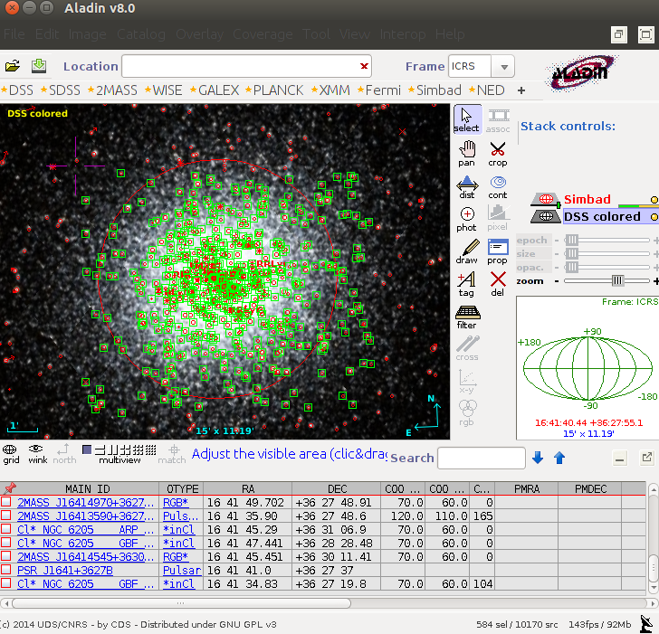
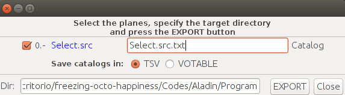

Help
Julián J.
About the Program
Crashes
This program is in pre-alpha version, so, you seldom will find crashes, but if it happens, you have to close the program in non-conventional
ways, because they wouldn't work. In Ubuntu you can press Alt+f2 and write "xkill". click in it and after click in the program.
Colors
The program has a randomly generator of colors in the scale RGB, look.
colors = []
for x in xrange(len(cool)): #Generated by RGB mode
colors.append((np.random.uniform(0, 1), np.random.uniform(0, 1), np.random.uniform(0, 1)))
This means that the colors are generated by a random method when the program runs.
Maybe you will find that in the graphics the colors doesn't let you identify the different objects,
so, if this happens, you only have to restart the program.
- (Not Recommended) On the other hand, the program has the option "Reload Colors" in the menu "Setup". If you click there, a new program will appear with colors reloaded, but it wouldn't
close the last one. Feel free to close the last one. Also, this option will open a new terminal, don't close it or you will close the program. \n
If you're in another OS or simply you don't have xterm, you need to adapt this piece of code to your computer, or restart the program.
def reloader():
os.system("xterm -hold -e sudo python aladin.py")
sys.exit()
Notice that if you click in "Reload Colors" without having xterm it will show an error.
About Aladin
- Go to the directory called Program that came in this compressed tar from the terminal:
cd Program/
There is a binary Called "Aladin", so, to execute it type:
bash Aladin
This works in Ubuntu/Devian distributions. If you've another OS use the analogue of "bash".
You should see something like this:

Now type in "Location" a position of the sky in RA and DEC or the name of a point of the sky

As you can see, I selected M13. After that click in *Simbad. All the red circles are objects of the sky catalogued.
Next, press the select button in the vertical toolbar. After that, click and hold the mouse doing a rectangle selecting all the objects catalogued that you want to analize. After doing that it will look like this.

Then, in the top go to "Catalog"-->"Create a New Plane With Selected sources"-->"In One Homogeneus Table"
Finally, go to "File"-->"Export Planes" (This wouldn't work if you didn't make the last step), you will see something like this.

It normally appears with two extensions, .src and .txt, but it doesn't matter.
References